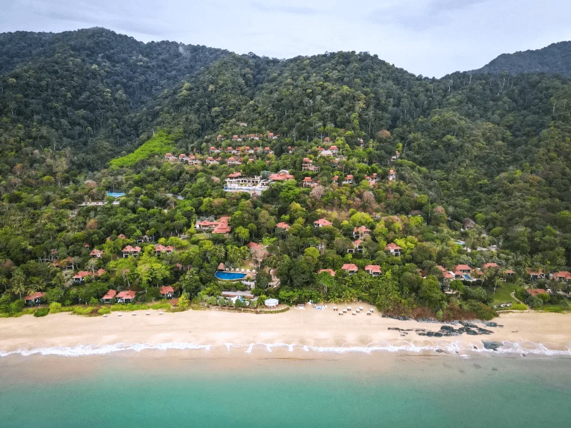
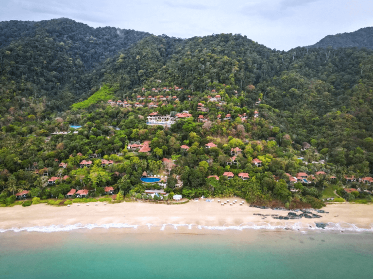
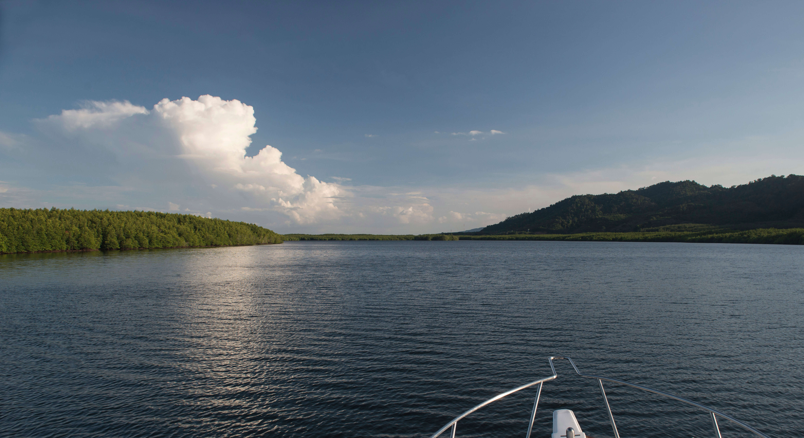
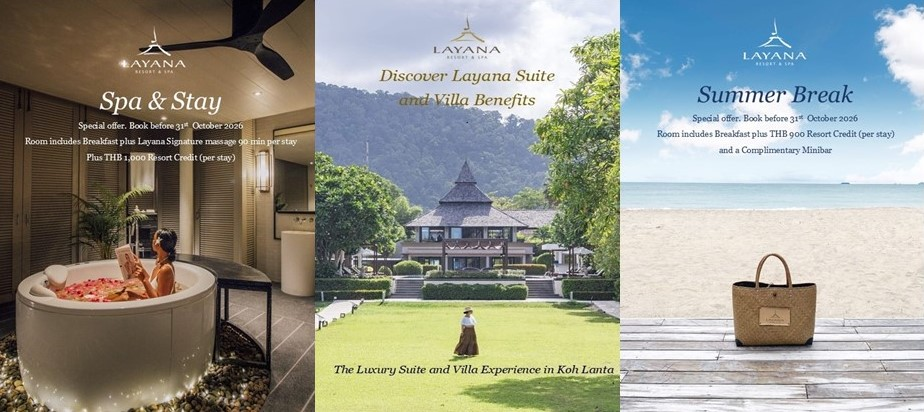
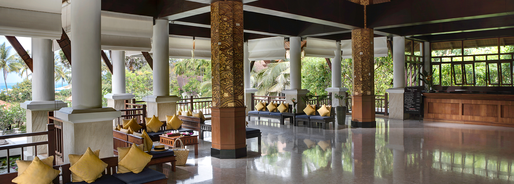
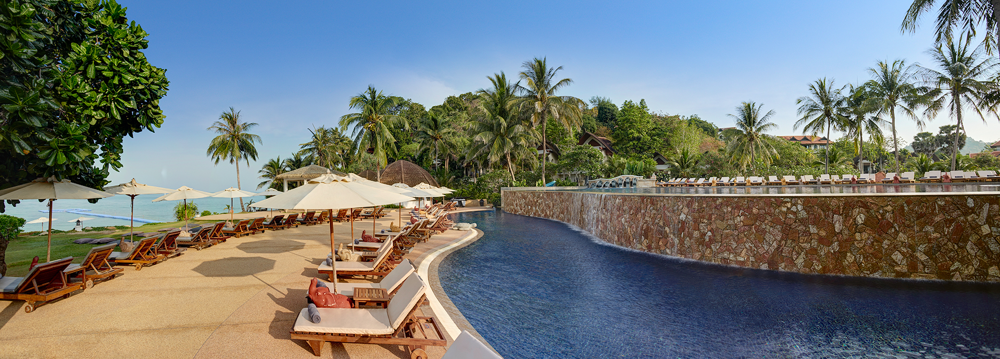
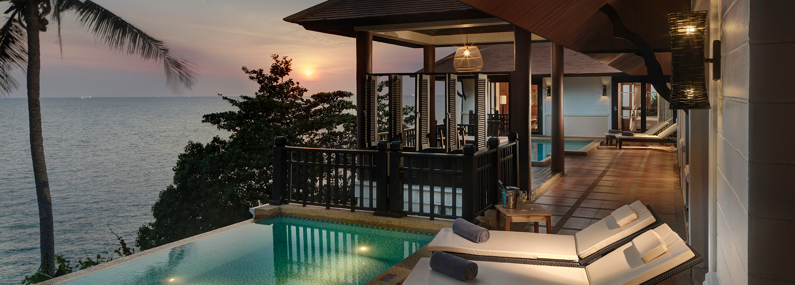
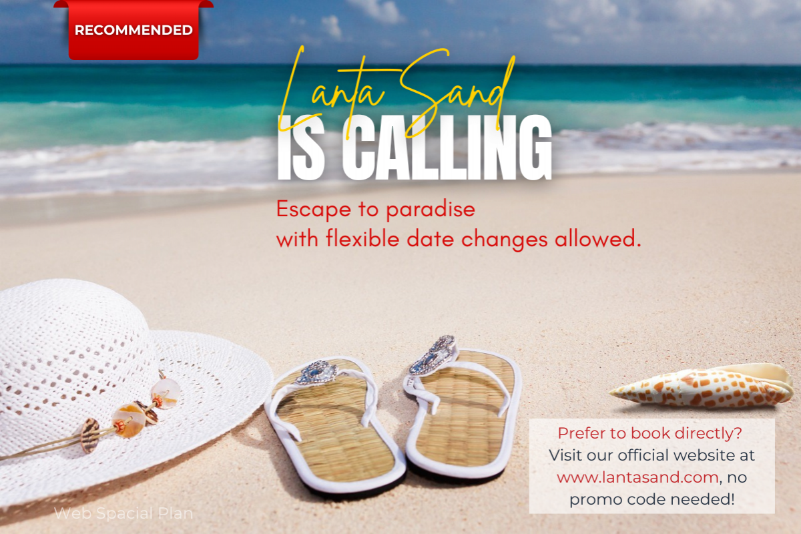
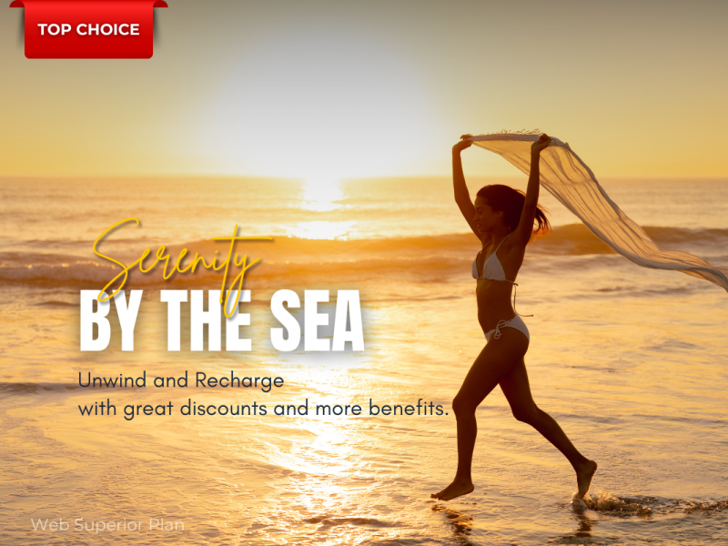
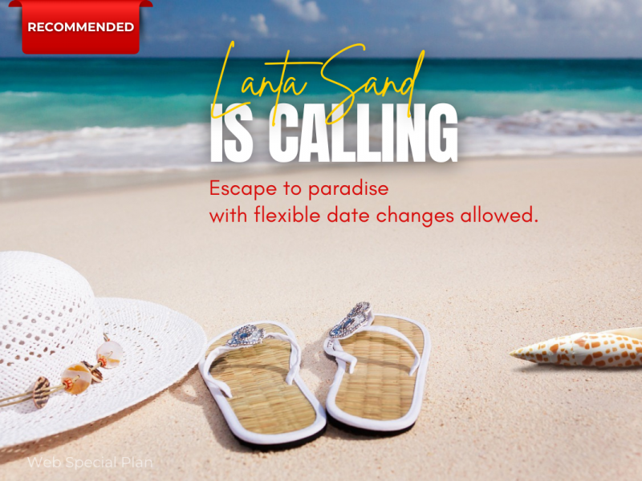

Long Beach
Praktisk førstevalg med strand, restauranter og enkel transport.
Koh Lanta passer for deg som vil ha god plass, stranddager og roligere tempo enn på Phuket. Øya er særlig fin for familier, par og reisende som vil kombinere resort med små restauranter og korte utflukter.
Velg base etter reisestil før du velger hotell. Det gjør dagene enklere og reduserer unødvendig transport.
Praktisk førstevalg med strand, restauranter og enkel transport.
Roligere strandliv med små restauranter og en mer avslappet kveld.
Sør på øya for natur, ro og premium-resorter.
Long Beach gir korte avstander og mange restaurantvalg.
Velg resort med basseng og strand når barna er små.
Legg inn én rolig båttur fremfor et fullt aktivitetsprogram.
Hvert hotell er presentert med ekte bilder hentet fra hotellets egen nettside. Sjekk alltid pris og tilgjengelighet hos hotellpartneren.



Resort i naturen. Et tydelig hotellvalg for par, familie og ro.



Adults only. Et tydelig hotellvalg for voksne og par.




Strandresort. Et tydelig hotellvalg for familie og resort.




Praktisk strandbase. Et tydelig hotellvalg for familie og verdi.
a
a
Velg lokale markeder, småbutikker og en rolig kveld fremfor å fylle hele dagen med transport.
Finn en opplevelse som passer tempoet ditt i Koh Lanta. Sammenlign tidspunkt og vilkår før bestilling.
Se aktiviteter hos Klook →Finn en opplevelse som passer tempoet ditt i Koh Lanta. Sammenlign tidspunkt og vilkår før bestilling.
Se aktiviteter hos Klook →Finn en opplevelse som passer tempoet ditt i Koh Lanta. Sammenlign tidspunkt og vilkår før bestilling.
Se aktiviteter hos Klook →